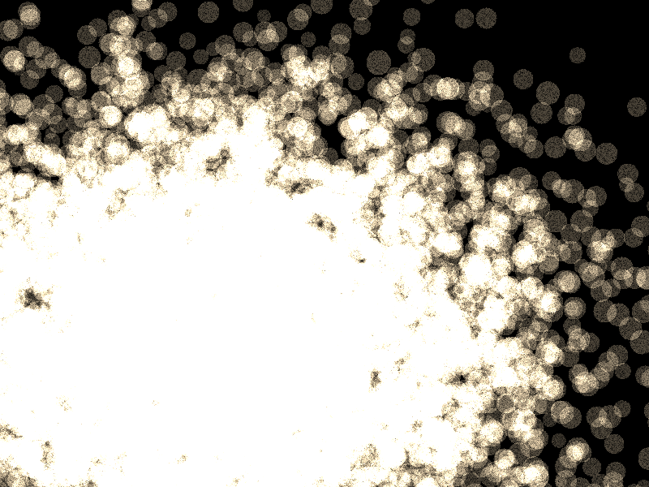

Example demonstrating simulation of fireworks using point sprites. (adapted from the “OpenGL ES 2.0 Programming Guide”)
This example demonstrates a series of explosions that last one second. The visualization during the explosion is highly optimized using a Vertex Buffer Object (VBO). After each explosion, vertex data for the next explosion are calculated, such that each explostion is unique.
Note
This example is based on vispy.gloo and thus uses GLSL
shading code, which is executed at the GPU and is
defined as multiline strings.
import time
import numpy as np
from vispy import gloo, app
# import vispy
# vispy.use('pyside', 'es2')
# Create a texture
radius = 32
im1 = np.random.normal(
0.8, 0.3, (radius * 2 + 1, radius * 2 + 1)).astype(np.float32)
# Mask it with a disk
L = np.linspace(-radius, radius, 2 * radius + 1)
(X, Y) = np.meshgrid(L, L)
im1 *= np.array((X ** 2 + Y ** 2) <= radius * radius, dtype='float32')
# Set number of particles, you should be able to scale this to 100000
N = 10000
# Create vertex data container
data = np.zeros(N, [('a_lifetime', np.float32, 1),
('a_startPosition', np.float32, 3),
('a_endPosition', np.float32, 3)])
VERT_SHADER = """
uniform float u_time;
uniform vec3 u_centerPosition;
attribute float a_lifetime;
attribute vec3 a_startPosition;
attribute vec3 a_endPosition;
varying float v_lifetime;
void main () {
if (u_time <= a_lifetime)
{
gl_Position.xyz = a_startPosition + (u_time * a_endPosition);
gl_Position.xyz += u_centerPosition;
gl_Position.y -= 1.0 * u_time * u_time;
gl_Position.w = 1.0;
}
else
gl_Position = vec4(-1000, -1000, 0, 0);
v_lifetime = 1.0 - (u_time / a_lifetime);
v_lifetime = clamp(v_lifetime, 0.0, 1.0);
gl_PointSize = (v_lifetime * v_lifetime) * 40.0;
}
"""
# Deliberately add precision qualifiers to test automatic GLSL code conversion
FRAG_SHADER = """
precision highp float;
uniform sampler2D texture1;
uniform vec4 u_color;
varying float v_lifetime;
uniform highp sampler2D s_texture;
void main()
{
highp vec4 texColor;
texColor = texture2D(s_texture, gl_PointCoord);
gl_FragColor = vec4(u_color) * texColor;
gl_FragColor.a *= v_lifetime;
}
"""
class Canvas(app.Canvas):
def __init__(self):
app.Canvas.__init__(self, keys='interactive', size=(800, 600))
# Create program
self._program = gloo.Program(VERT_SHADER, FRAG_SHADER)
self._program.bind(gloo.VertexBuffer(data))
self._program['s_texture'] = gloo.Texture2D(im1)
# Create first explosion
self._new_explosion()
# Enable blending
gloo.set_state(blend=True, clear_color='black',
blend_func=('src_alpha', 'one'))
gloo.set_viewport(0, 0, self.physical_size[0], self.physical_size[1])
self._timer = app.Timer('auto', connect=self.update, start=True)
self.show()
def on_resize(self, event):
width, height = event.physical_size
gloo.set_viewport(0, 0, width, height)
def on_draw(self, event):
# Clear
gloo.clear()
# Draw
self._program['u_time'] = time.time() - self._starttime
self._program.draw('points')
# New explosion?
if time.time() - self._starttime > 1.5:
self._new_explosion()
def _new_explosion(self):
# New centerpos
centerpos = np.random.uniform(-0.5, 0.5, (3,))
self._program['u_centerPosition'] = centerpos
# New color, scale alpha with N
alpha = 1.0 / N ** 0.08
color = np.random.uniform(0.1, 0.9, (3,))
self._program['u_color'] = tuple(color) + (alpha,)
# Create new vertex data
data['a_lifetime'] = np.random.normal(2.0, 0.5, (N,))
data['a_startPosition'] = np.random.normal(0.0, 0.2, (N, 3))
data['a_endPosition'] = np.random.normal(0.0, 1.2, (N, 3))
# Set time to zero
self._starttime = time.time()
if __name__ == '__main__':
c = Canvas()
app.run()